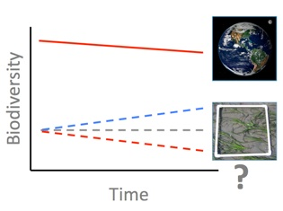

Robin Elahi, PhD
Marine Community Ecology and Population Biology
Research
Temporal trends in marine biodiversity - a global synthesis
The modern biodiversity crisis reflects global extinctions and local introductions. In particular, humans have dramatically altered the rates and scales of the processes that regulate local species diversity. Surprisingly, temporal trends in biodiversity of local assemblages have not reflected predictions of net loss, raising questions about the severity of the biodiversity crisis. To address this gap, we analyzed 439 time series from 189 sites in coastal communities in the context of ecologically relevant factors, including human impacts. We found that net species loss was associated with localized effects of anthropogenic impacts, but net species gain prevailed in the absence of documented impacts.

Is biodiversity loss at the global scale reflected at local scales in marine coastal communities?